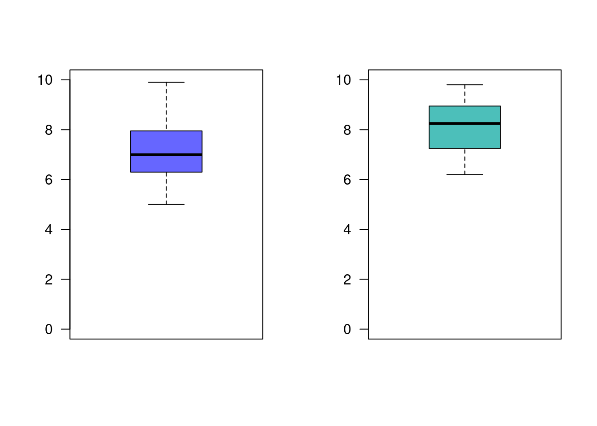
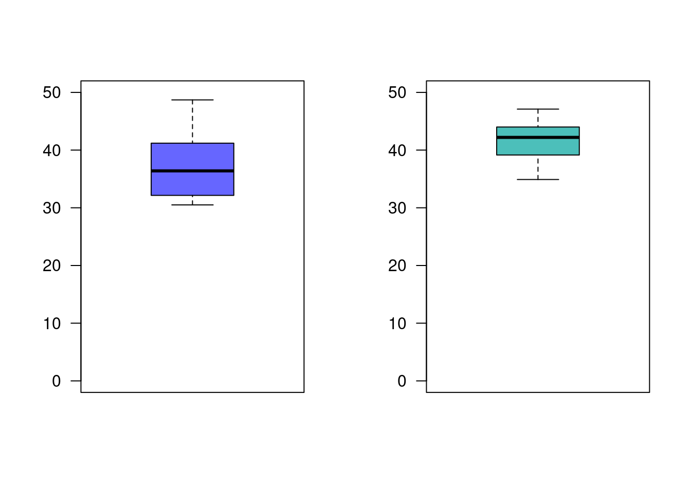
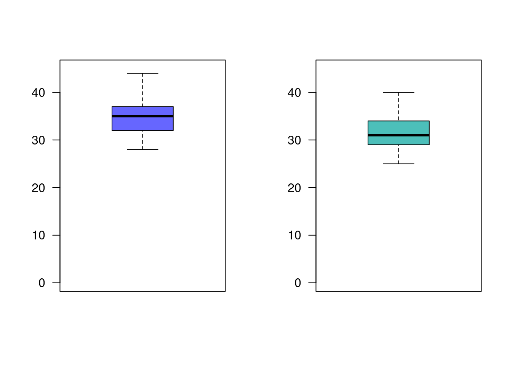
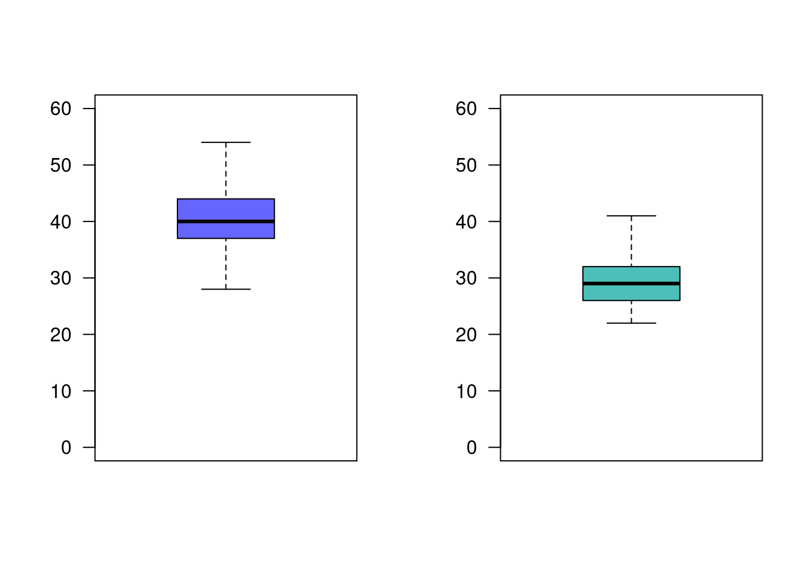
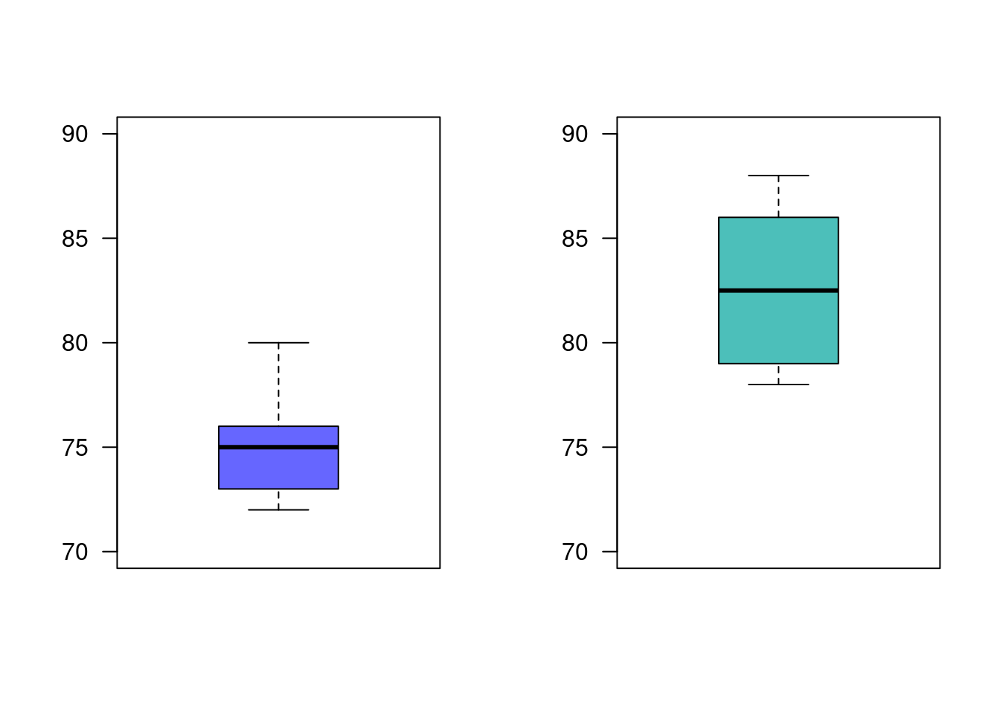

Suponga que se estudia la compra de una nueva maquina para una empresa. Se comprará si la proporción de la producción que necesita ser reprecesados por tener defectos es inferior al 5%. Se examina una muestra de 40 artículos construidos por la máquina y 3 necesitan ser reprocesados. ¿Que decisión se toma? (Se compra o no la máquina?)
| \(Ho\) : \(p \geq 0.05\) |
| \(Ha\) : p < 0.05 $ |
prop.test(x=3,n=40, p=0.05, conf.level=0.95, alternative = "less")Warning in prop.test(x = 3, n = 40, p = 0.05, conf.level = 0.95, alternative =
"less"): Chi-squared approximation may be incorrect
1-sample proportions test with continuity correction
data: 3 out of 40, null probability 0.05
X-squared = 0.13158, df = 1, p-value = 0.6416
alternative hypothesis: true p is less than 0.05
95 percent confidence interval:
0.0000000 0.1894048
sample estimates:
p
0.075 Conclusión
Como el p-value = 0.6416 > \(\alpha\), no rechazamos \(Ho\), no existe suficiente evidencia en la muestra que permita su rechazo, asumimos que \(Ho\) es verdadera.
Debido a que no se pudo confirmar que la maquina produce menos del 5% de articulos defectuosos, se recomienda no comprar la máquina
Suponga que una empresa desarrolla un curso de entrenamiento para sus empleados, formando dos grupos y aplicándoles dos métodos distintos de entrenamiento. El primer grupo lo componen 36 empleados, mientras que el segundo grupo por 40 empleados. Los resultados en calificaciones entre 0 y 10, se presentan a continuación:
g1=c(6.2, 5.0, 6.9, 7.5, 8.6, 9.0, 7.0, 6.3, 9.9, 7.2, 8.1, 6.3, 5.2, 7.7, 5.7, 7.1, 6.4, 7.1, 8.3, 8.2, 6.4, 7.0, 7.8, 6.9, 8.5, 7.7, 8.2, 5.9, 9.8, 5.9, 6.7, 6.3, 6.7, 5.4, 7.2, 6.4)
g2=c(8.2, 6.7, 7.6, 8.3, 9.4, 7.3, 6.7, 7.2, 9.8, 9.6, 8.9, 7.3, 9.7, 7.9, 9.1, 9.0, 9.2, 7.4, 8.3, 8.6, 8.5, 9.2, 7.0, 6.6, 8.4, 8.3, 7.5, 6.8, 7.0, 7.3, 8.9, 6.2, 7.1, 8.5, 9.1, 7.9, 8.1, 8.6, 6.8, 9.0)
par(mfrow = c(1, 2))
boxplot(g1, las=1, col = c2, ylim=c(0,10))
boxplot(g2, las=1, col = c3, ylim=c(0,10))
En este caso se trata de una comparación de medias, para grupos independientes.
| \(Ho\) : \(\mu_1 = \mu_2\) |
| \(Ha\) : \(\mu_1 \neq \mu_2\) |
Antes de proceder a realizar la prueba de hipótesis debemos de verificar algunos supuestos.
| \(Ho\) : \(X_1 \hspace{.3cm} \sim norm\) |
| \(Ha\) : \(X_1 \hspace{.3cm}no \sim norm\) |
shapiro.test(g1)
Shapiro-Wilk normality test
data: g1
W = 0.9728, p-value = 0.5069shapiro.test(g2)
Shapiro-Wilk normality test
data: g2
W = 0.95887, p-value = 0.1533En el caso de \(X_1\) la prueba de Shapiro-Wilk arroja un p-value = 0.5069, lo cual indica que podemos asumir que la variable \(X_1\), se distribuye normal. Igual ocurre con el resultado de la prueba para la variable \(X_2\) (p-value = 0.1533)
Ahora se realiza la prueba de hipotesis para determinar si las varianzas de los dos grupos son iguales o diferentes
| | |:—————————| | \(Ho\) : \(\sigma_{1}^{2} = \sigma_{2}^{2}\) | | \(Ha\) : \(\sigma_{1}^{2} \neq \sigma_{2}^{2}\) | | |
var.test(g1,g2)
F test to compare two variances
data: g1 and g2
F = 1.4447, num df = 35, denom df = 39, p-value = 0.2643
alternative hypothesis: true ratio of variances is not equal to 1
95 percent confidence interval:
0.7545004 2.7989666
sample estimates:
ratio of variances
1.444723 En este caso el resultado (p-value = 0.2643) indica que no se rechaza \(Ho\), la muestra no da suficiente evidencia estadística para rechazarla, asumimos que las varianzas son iguales
Con este resultado y sabiendo que los datos corresponden a grupos independientes realizamos la seguiente prueba
t.test(g1,g2, # variables
paired=FALSE, # grupos independientes
var.equal=TRUE, # varianzas iguales
conf.level=0.95) # alpha = 0.05
Two Sample t-test
data: g1 and g2
t = -3.7972, df = 74, p-value = 0.0002975
alternative hypothesis: true difference in means is not equal to 0
95 percent confidence interval:
-1.4485078 -0.4514922
sample estimates:
mean of x mean of y
7.125 8.075 Conclusión
Como el p-value = 0.0002975 , rechazamos \(Ho\), aceptamos Ha como verdadera. \(\mu_1 \neq \mu_2\). Ahora podemos valorar las hipótesis
| \(Ho\) : \(\mu_1 \geq \mu_2\) |
| \(Ha\) : \(\mu_1 < \mu_2\) |
t.test(g1,g2, # variables
paired=FALSE, # grupos independientes
var.equal=TRUE, # varianzas iguales
conf.level=0.95, # alpha = 0.05
alternative = "less") # hipótesis alterna menor que (cola inferior)
Two Sample t-test
data: g1 and g2
t = -3.7972, df = 74, p-value = 0.0001488
alternative hypothesis: true difference in means is less than 0
95 percent confidence interval:
-Inf -0.5332623
sample estimates:
mean of x mean of y
7.125 8.075 Con este resultado podemos concluir que \(\mu_1 < \mu_2\), lo cual indica que el segundo grupo obtuvo un mejor rendimiento que el primer grupo. Se puede concluir que el método empleado con el segundo grupo genera mejores resultados.
Los ingenieros de una ensambladora de automóviles requieren decidir sobre cual de dos de las marcas de neumáticos de deben comprar. La marca FB o la marca KT. Con el fin de tomar una decisión basada en evidencias estadísticas, deciden realizar un experimento en el que usan 12 neumáticos de cada marca. Los neumáticos se utilizan hasta su terminación . Los resultados obtenidos (en miles de kilometros) se presentan a continuación :
FB=c(41.8, 41.6, 31.5, 48.7, 40.8, 31.2, 36.5, 36.2, 32.8, 36.3, 38.6, 30.5)
KT=c(40.5, 38.4, 44.0, 34.9, 44.0, 44.7, 44.0, 47.1, 39.8, 43.9, 38.5, 40.2)
par(mfrow = c(1, 2))
boxplot(FB, las=1, col = c2, ylim=c(0,50))
boxplot(KT, las=1, col = c3, ylim=c(0,50))
¿Cual de las marcas de neumáticos recomendaría comprar? ¿Que supuestos deberá confirmar?. Utilice un \(\alpha=0.05\)
| \(Ho\) : \(\mu_{FB} = \mu_{KT}\) |
| \(Ha\) : \(\mu_{FB} \neq \mu_{KT}\) |
Como en los casos anteriores para una comparación de medias, suponiendo que las variables presentan una distribución normal ( conocimiento previo de este tipo de variables), procedemos a realizar una prueba de comparación de varianzas
| \(Ho\) : \(\sigma_{FB}^{2} = \sigma_{KT}^{2}\) |
| \(Ha\) : \(\sigma_{FB}^{2} \neq \sigma_{KT}^{2}\) |
var.test(FB,KT)
F test to compare two variances
data: FB and KT
F = 2.417, num df = 11, denom df = 11, p-value = 0.1589
alternative hypothesis: true ratio of variances is not equal to 1
95 percent confidence interval:
0.6957897 8.3958061
sample estimates:
ratio of variances
2.416964 p-value = 0.1589, resultante del contraste indica que podemos decir que las varianzas se asumen iguales
Ahora procedemos a realizar el contraste de medias
t.test(FB,KT, # variables
paired=FALSE, # grupos independientes
var.equal=TRUE, # varianzas iguales
conf.level=0.95) # alpha = 0.05
Two Sample t-test
data: FB and KT
t = -2.398, df = 22, p-value = 0.0254
alternative hypothesis: true difference in means is not equal to 0
95 percent confidence interval:
-8.3139995 -0.6026672
sample estimates:
mean of x mean of y
37.20833 41.66667 p-value = 0.0254, indica que podemos rechazar \(Ho\), aceptamos como verdadera \(Ha\), \(\mu_{FB} \neq \mu_{KT}\)
Con este resultado procedemos a realizar una prueba de cola inferior
t.test(FB,KT, # variables
paired=FALSE, # grupos independientes
var.equal=TRUE, # varianzas iguales
conf.level=0.95, # alpha = 0.05
alternative = "less" )
Two Sample t-test
data: FB and KT
t = -2.398, df = 22, p-value = 0.0127
alternative hypothesis: true difference in means is less than 0
95 percent confidence interval:
-Inf -1.265884
sample estimates:
mean of x mean of y
37.20833 41.66667 p-value = 0.0127, nos indica que se rechaza \(Ho\), se acepta \(Ha\) como verdadera, las llantas KT tienen un mayor rendimiento promedio que las llantas FB. Se recomienda la compra de las llantas KT.
Un ingeniero desea establecer si existen diferencias entre dos métodos diferentes de realizar el ensamble de una casa prefabricada. Para comprobarlo recogen información del tiempo empleado en el ensamble de una pieza para ambos métodos en horas, los cuales se presentan a continuación:
met.nue=c(32, 37, 35, 28, 41, 44, 35, 31, 34)
met.est=c(35, 31, 29, 25, 34, 40, 27, 32, 31)
par(mfrow = c(1, 2))
boxplot(met.nue, las=1, col = c2, ylim=c(0,45))
boxplot(met.est, las=1, col = c3, ylim=c(0,45))
Presentan los datos suficiente evidencia que permita afirmar que el nuevo método es mas eficiente que el método estándar? (Utilice un \(\alpha=0.05\))
El director de un gimnasio quiere determinar si un instructor de ejercicios debe ser contratado o no para su campaña estrella “Reducción de peso”. Para tomar la decisión indica a un candidato que pruebe con 16 personas que asisten habitualmente al gimnasio. Los siguientes datos corresponden a los pesos tomados al inicio del programa (\(x1\)) y sus pesos al finalizar el programa (\(x2\))
x1=c(104, 89, 84, 106, 90, 96, 79, 90, 85, 76, 91, 82, 100, 89, 121, 72)
x2=c( 98, 85, 85, 103, 88, 95, 79, 90, 82, 76, 89, 81, 99, 86, 111, 70)¿Que supuestos se deben verificar? ¿Se podría decir que las rutinas empleadas por el instructor producen los efectos indicados?
Se realizan pruebas de un nuevo lector láser manual para uso en la realización de inventarios y del lector utilizado actualmente, con el fin de decidir si se adquiere el primero. Se obtienen los datos sobre el número de códigos de barra leídos por segundo con el cada uno de los dispositivos.
lec.nue=c(35, 40, 36, 42, 41, 52, 36, 41, 49, 41, 45, 38, 31, 54, 37, 47, 38, 34, 46, 39, 45, 44, 41, 42, 36, 43, 35, 31, 38, 38, 41, 41, 44, 44, 35, 44, 38, 33, 38, 49, 45, 45, 38, 46, 28, 40, 41, 47, 43, 50, 39, 36, 39, 38, 37, 37, 47, 37, 41, 40, 35)
lec.act=c(41, 33, 22, 27, 31, 25, 28, 36, 29, 32, 25, 31, 31, 30, 31, 36, 26, 29, 29, 26, 27, 27, 30, 34, 26, 30, 23, 22, 29, 31, 37, 32, 34, 25, 25, 36, 32, 30, 23, 31, 33, 27, 27, 29, 35, 36, 27, 29, 25, 34, 27, 25, 32, 37, 31, 33, 27, 31, 26, 25, 24)
par(mfrow = c(1, 2))
boxplot(lec.nue, las=1, col = c2, ylim=c(0,60))
boxplot(lec.act, las=1, col = c3, ylim=c(0,60))
# dos poblaciones independientes
# Ho: x1 es normal
# Ha: x1 no es normal
shapiro.test(lec.nue) # p-value = 0.76 >> alpha, no rechazamos Ho, asumimos que x1 es normal
Shapiro-Wilk normality test
data: lec.nue
W = 0.98691, p-value = 0.76# Ho: x2 es normal
# Ha: x2 no es normal
shapiro.test(lec.act) # p-value = 0.2296 >> alpha, no rechazamos Ho, asumimos que x2 es normal
Shapiro-Wilk normality test
data: lec.act
W = 0.97442, p-value = 0.2296# Ho: va1 = va2
# Ha: var1 != var2
var.test(lec.nue, lec.act) # p-value = 0.09654 > alpha, por tanto no rechazamos Ho, asumimos que las varianzas son iguales
F test to compare two variances
data: lec.nue and lec.act
F = 1.5412, num df = 60, denom df = 60, p-value = 0.09654
alternative hypothesis: true ratio of variances is not equal to 1
95 percent confidence interval:
0.9246342 2.5688108
sample estimates:
ratio of variances
1.541172 # Ho : mu_lec.nue <= mu_lec.act
# Ha : mu_lec.nue > mu_lec.act
t.test(lec.nue,lec.act, paired=FALSE, var.equal=TRUE, conf.level=0.95, alternative = "greater")
Two Sample t-test
data: lec.nue and lec.act
t = 12.801, df = 120, p-value < 2.2e-16
alternative hypothesis: true difference in means is greater than 0
95 percent confidence interval:
9.547053 Inf
sample estimates:
mean of x mean of y
40.50820 29.54098 De acuerdo con la información, es posible preferir alguno de ellos? ¿Que supuestos se deben verificar?
Un empresario registro el número de artículos producidos durante 10 días para un grupo conformado por 15 obreros los cuales tienen un salario fijo (grupo 1). El gerente piensa que si se cambia la forma del salario tendrán mejores resultados. Para verificarlo introduce cambios en la forma de pago a un segundo grupo (grupo 2) . El numero de artículos producidos por ambos grupos son los siguientes:
g1=c(75, 76, 74, 80, 72, 78, 76, 73, 72, 75)
g2=c(86, 78, 86, 84, 81, 79, 78, 84, 88, 80)
par(mfrow = c(1, 2))
boxplot(g1, las=1, col = c2, ylim=c(70,90))
boxplot(g2, las=1, col = c3, ylim=c(70,90))
# dos poblaciones, de grupos independientes
# Ho: var1 = var2
# Ha: var1 != var2
var.test(g1,g2) # como el valor-p >> alpha, no rechazamos Ho, asumimos que las varianzas son iguales
F test to compare two variances
data: g1 and g2
F = 0.4892, num df = 9, denom df = 9, p-value = 0.3018
alternative hypothesis: true ratio of variances is not equal to 1
95 percent confidence interval:
0.121511 1.969527
sample estimates:
ratio of variances
0.4892027 # Ho: mu1 >= mu2
# Ha: mu1 < mu2
t.test(g1,g2, paired=FALSE, var.equal=TRUE, conf.level=0.95, alternative = "less")
Two Sample t-test
data: g1 and g2
t = -5.1719, df = 18, p-value = 3.204e-05
alternative hypothesis: true difference in means is less than 0
95 percent confidence interval:
-Inf -4.852437
sample estimates:
mean of x mean of y
75.1 82.4 Suponiendo que los salarios pagados a ambos grupos son equivalentes, se podría afirmar que el plan de incentivos es efectivo? ¿Que supuestos se deben verificar?
La pizzeria P20 realizó el mes pasado una encuestas (\(n_1=200\)) para determinar la proporción de clientes que prefieren el tamaño familiar. La encuesta recogida muestra que el 20% de sus clientes prefieren el tamaño familiar. Con el fin de aumentar las ventas, realiza una estrategia de publicidad en redes. Pasado dos meses de la campaña la empresa realizó una segunda encuesta (\(n_2=200\)), obteniendo en este caso una proporción de 25%.
De acuerdo con los resultados podría decirse que la campaña realizada es efectiva? (utilice un \(\alpha=0.05\))
prop.test(c(40,50), c(200,200), conf.level = 0.95)
2-sample test for equality of proportions with continuity correction
data: c(40, 50) out of c(200, 200)
X-squared = 1.1613, df = 1, p-value = 0.2812
alternative hypothesis: two.sided
95 percent confidence interval:
-0.13669783 0.03669783
sample estimates:
prop 1 prop 2
0.20 0.25 # p-value = 0.1406 >> alpha=0.05, no rechazamos Ho, asumimos que Ho es verdadera
# no existe suficiente evencia en la muestra que nos permita afirmar que la campaña fue efectiva
# Regla 2 : si valor-p < alpha, rechazamos Ho , aceptamos Ha como verdadera
# si valor-p > alpha, no rechazamos Ho , asumimos que Ho es verdad